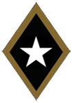
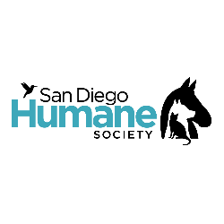
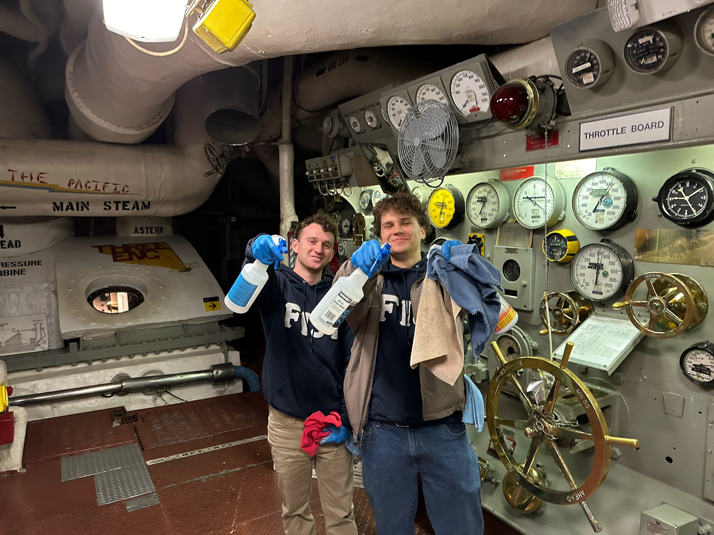

PHILANTHROPY

Award-Winning Dedication to Service
AT UCSD FIJI, we put our values into action every year through service projects and fundraising for our philanthropic causes. For the 2023-2024, FIJI was honored by the UCSD Interfraternity Council with the Most Philanthropic award as the most exemplary chapter on campus committed to giving and service. Below, you can learn more about each of these causes and our work in recent years. Our members believe it is our duty to give back by helping those in need, from rescue animals to children with illness.
check out our current causes for the 2024/2025 school year below!
camp kesem
Our chapter proudly supports Camp Kesem by organizing tabling events and raising funds throughout the academic year. Through these efforts, we help provide essential resources for Camp Kesem’s mission to offer free summer camps for children impacted by a parent’s cancer. By uniting our brothers, friends, and the UC San Diego community, we aim to make a lasting impact on the lives of these children and their families.

san diego humane society
Our signature annual Puppy Parade, in collaboration with the San Diego Humane Society, is a hallmark of our chapter’s philanthropic engagement. This event features adoptable dogs, community interaction, and a variety of fundraising activities aimed at supporting the shelter’s ongoing efforts. Beyond the enjoyment it provides to participants, the Puppy Parade underscores our commitment to animal welfare and helps promote responsible pet adoption and community involvement.

local community engagement
Beyond these signature events, our chapter remains committed to ongoing service in the San Diego area. Whether we are making sandwiches for a local homeless shelter, organizing beach cleanups, or volunteering at local establishments— like assisting in cleaning and opening the USS Midway Museum— our members continuously seek ways to give back. We believe that through small, consistent acts of service, we can foster meaningful connections and truly make a difference in our community.